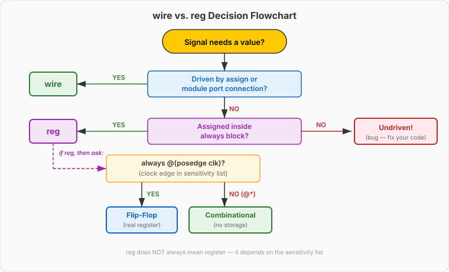

Video 1 of 4 · ~15 minutes
Dr. Mike Borowczak · Electrical & Computer Engineering · CECS · UCF
Every RTL codebase you'll ever read opens with a wall of signal
declarations. Linter warnings about wire/reg
misuse are the #1 category of feedback in modern RTL code review.
Nailing this distinction is table-stakes for a code review to go well.
Every lab from today forward uses vectors ([7:0],
[31:0]). Concatenation and sign extension show up on
Day 3 (ALU), Day 9 (memory addressing), Day 11 (UART framing), and
your Barcelona capstone. This is working vocabulary.
logic — but you still have to read legacy code.
“wire means a wire (no storage).
reg means a register (has storage).
So if I want a flip-flop, I use reg.”
These are syntax categories, not hardware categories.
wire = “assigned continuously (assign
or module port).” reg = “assigned procedurally
(inside always).” Whether a reg becomes
a flip-flop depends entirely on context — specifically,
whether there's a clock edge.
reg that Yosys
synthesizes to pure combinational logic (zero flops). You can have a
wire that drives a flip-flop's D input. The type name tells
you how it's assigned, not what hardware it becomes.
// 1. wire → always combinational
wire [7:0] w_sum;
assign w_sum = a + b; // continuous: an adder
// 2. reg → flip-flop (because of posedge clk)
reg [7:0] r_counter;
always @(posedge clk)
r_counter <= r_counter + 1; // clocked: a register
// 3. reg → combinational (no clock edge!)
reg [3:0] r_mux_out;
always @(*)
r_mux_out = sel ? a : b; // unclocked: a mux, NOT a flop
// 4. reg → INFERRED LATCH (missing else → bug)
reg [3:0] r_broken;
always @(*) if (enable) r_broken = data; // ⚠ latchw_ and r_
prefix convention because the synthesizer doesn't care, but the reader does.
Case 4 is the bug you'll hit 50+ times this semester. Video 3 of Day 3 is all about
spotting it.

logic type (Day 13) collapses both branches into one —
you still get latch warnings, but you stop playing “which keyword is it today?”
wire [7:0] w_data; // 8-bit bus: bit 7 = MSB, bit 0 = LSB
wire [3:0] w_nibble; // 4-bit bus
w_data[7] // single bit — the MSB
w_data[3:0] // lower nibble — bits 3 down to 0
w_data[7:4] // upper nibble — bits 7 down to 4[MSB:LSB] with LSB = 0.
You can use ascending [0:7], but don't — it reverses
the natural numerical reading. w_data[3:0] == 4'b0101 reads as
“5”; w_data[0:3] == 4'b0101 reads as “5 reversed” and
confuses every reader.
// Concatenation: join signals
wire [7:0] w_byte = {w_nibble_hi, w_nibble_lo}; // 4+4 = 8 ✓
// Replication: repeat a pattern
wire [7:0] w_all_ones = {8{1'b1}}; // 8'b11111111
// Sign extension: replicate MSB to fill upper bits
wire [7:0] w_sign_ext = {{4{w_nibble[3]}}, w_nibble}; // 4→8{{N{bit}}, signal} is just
concatenation of a replication with a signal.
Given:
wire [3:0] nibble_a = 4'b1101;
wire [3:0] nibble_b = 4'b0010;
wire [7:0] concat = {nibble_a, nibble_b};
wire [7:0] repl = {8{nibble_a[0]}};
wire [7:0] sign_ext = {{4{nibble_a[3]}}, nibble_a};Predict in binary and hex:
concat = ? repl = ? sign_ext = ? concat = 8'b1101_0010 = 8'hD2 ·
repl = 8'b11111111 = 8'hFF (bit 0 of 1101 is 1) ·
sign_ext = 8'b1111_1101 = 8'hFD (MSB=1 replicated four times).
lectures/week1_day02/code/day02_ex01_vector_ops.v · ~4 minutes
▸ COMMANDS (from the lecture dir)
cd lectures/week1_day02/code/
iverilog -g2012 -o vec.vvp \
day02_ex01_vector_ops.v \
tb_vector_ops.v
vvp vec.vvp # prints PASS/FAIL
gtkwave dump.vcd & # open waveforms▸ EXPECTED STDOUT
PASS: concat = 8'hD2
PASS: replicate = 8'hFF
PASS: sign_ext = 8'hFD
PASS: upper = 4'hD
PASS: lower = 4'h2
=== 5 passed, 0 failed ===▸ GTKWAVE — WHAT TO LOOK FOR
Add: i_nibble_a · i_nibble_b · o_concat · o_replicate · o_sign_ext.
Set each bus to hex radix (right-click → Data Format → Hex).
Watch o_concat update instantly whenever either input changes —
that's “combinational” made visible: zero delay between cause and effect.
Running Yosys on the vector_ops module:
$ yosys -p "read_verilog day02_ex01_vector_ops.v; \
synth_ice40 -top vector_ops; stat" -q
=== vector_ops ===
Number of wires: 11
Number of cells: 0
SB_DFF 0 ← no flops!
SB_LUT4 0 ← no LUTs!
Surprising?
Zero gates. This module is just re-labeled wiring.
Ask an AI assistant:
“Given wire [3:0] a = 4'b1000;, what does
{{4{a[3]}}, a} evaluate to, and how many gates does it
synthesize to on an iCE40?”
TASK
Prompt with exact expression + ask for value AND gate count.
BEFORE
Your prediction: 8'b1111_1000, needs some logic to replicate bit 3.
AFTER
Value: correct. Gate count: AI may say “a few LUTs” — but it's actually zero.
TAKEAWAY
Replication is wire fan-out, not logic. AI often over-counts. Run Yosys yourself and trust stat.
yosys -p "... synth_ice40; stat". If AI
and Yosys disagree on gate count, Yosys wins.
① wire = driven by assign. reg = assigned in always.
② reg does NOT always mean register — context (posedge clk?) decides.
③ Vectors: [7:0] is 8 bits, descending, LSB = 0.
④ Concat/replicate/sign-extend are free — wire rerouting, zero gates.
🔗 Transfer
Video 2 of 4 · ~12 minutes
▸ WHY THIS MATTERS NEXT
You just saw that concat/replicate/sign-extend cost zero gates. Video 2 shows the opposite end of the spectrum: arithmetic and comparison operators consume real LUTs and carry cells. By the end of this day you'll know, for any expression, roughly how much hardware Yosys will build for it — which is the first step toward writing code that hits timing and fits in your FPGA.